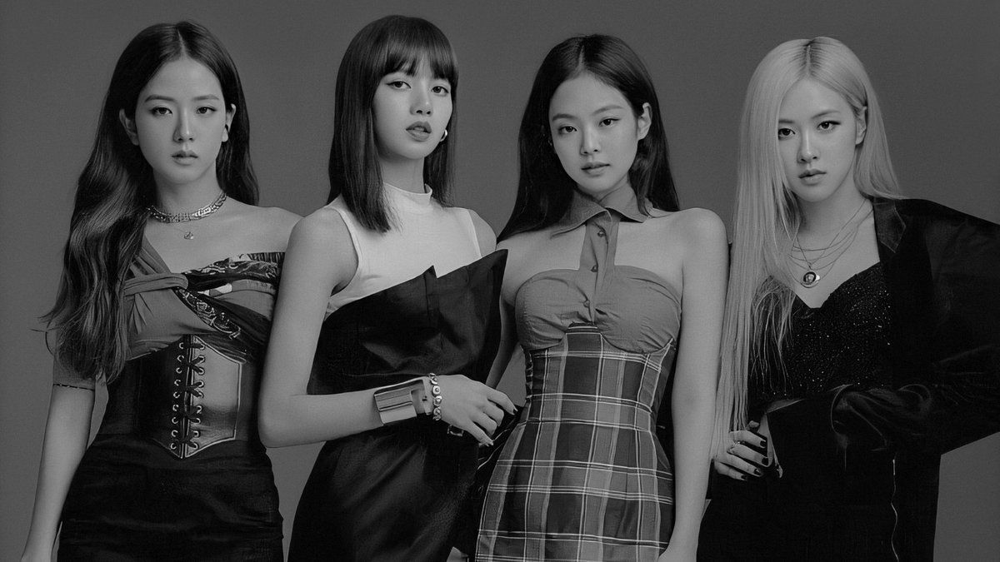

BLACKPINK
is a South Korean girl group formed by YG Entertainment, consisting of members Jisoo, Jennie, Rosé, and Lisa.
Blackpink began forming when YG Entertainment held tryouts worldwide for preteen or teenage recruits to create a new girl group after launching its first major girl group, 2NE1, in 2009.
According to the members, joining the label as trainees was similar to enrolling in a full-time pop-star academy, with Jennie describing the experience as "more strict than school" and Rosé comparing it to The X Factor with dorm rooms.
For members who had left their lives outside of South Korea, the pace of training alongside the culture shock was especially difficult.
Preparations for Blackpink's debut began as early as 2011, when YG Entertainment revealed on November 14 that their new girl group would debut in the early half of 2012 and feature at least seven members.[22] Since then, numerous news and rumors surfaced surrounding the new girl group's debut being delayed, although there had been no official information.[23][24] It was only until May 18, 2016 that YG Entertainment confirmed the girl group would debut that July, stating that the members were selected through years of stiff competition. The label later confirmed that Jang Hanna and Moon Sua, who were introduced to the public as potential members of the new girl group, were not included in the lineup.
Promotions for their debut began in the first week of August 2016 with the release of teaser images, videos, and advertisements.
The first girl group to debut under YG Entertainment in seven years, Blackpink released their debut single album, Square One, on August 8, 2016, consisting of tracks "Boombayah" and "Whistle".
They charted at number one and two on the Billboard World Digital Song Sales chart, making Blackpink the fastest act to achieve such a feat and the third Korean artist to hold the top two positions simultaneously, after label mates Psy and Big Bang. "Whistle" quickly topped the Gaon digital, download, streaming, and mobile charts. The group also reached number one on the weekly, popularity, music video, and K-pop music video charts of China's biggest music-streaming service, QQ Music.
Blackpink's first music show performance aired on August 14, 2016 on SBS's Inkigayo. They won first place on Inkigayo thirteen days after their debut, breaking the record for the shortest time for a girl group to win on a music program after debut. They wrapped up promotions for Square One on September 11, 2016, with another win on Inkigayo.
On January 6, 2018, Blackpink released the first episode of their first reality show Blackpink House, which comprised 12 episodes released throughout 2018 following the four members spending 100 days of vacation as they moved into their new dorm, via their official V Live and Youtube channels.
On March 28, Blackpink re-released their debut Japanese EP under the name Re:Blackpink. The digital version included the same songs as the original release, while the physical version included a DVD containing all music videos and six songs in the Korean language.
On April 22, it was confirmed the group would be collaborating with Lady Gaga for her sixth studio album, Chromatica, on the track titled "Sour Candy", which was released as a promotional single on May 28, 2020.
Hot 100, the song debuted at number 33, giving Gaga her 25th top 40 hit and Blackpink their first, becoming the group's highest-charting song in the United States at the time, as well as the highest-charting song by a K-pop girl group.
In Australia, the song debuted at number eight, becoming Blackpink's highest-charting hit in the country. It was also their first top-twenty single in the UK, debuting at number 17.
Stage Name: Jennie (제니)
Birth Name: Kim Jennie (김제니)
Nicknames: NiNi, Jendeukie
Position: Main Rapper, Lead Vocalist
Birthday: January 16, 1996
Zodiac Sign: Capricorn
Birthplace: Anyang, South Korea
Height: 163 cm (5’4″)
Weight: 45 kg (99 lbs)
Blood Type: B
Stage Name: Rosé (로제)
Birth Name: Park Chae Young (박채영)
English Name: Roseanne Park
Nicknames: Rose, Rosie, “Pasta”
Position: Main Vocalist, Lead Dancer
Birthday: February 11, 1997
Zodiac Sign: Aquarius
Birthplace: Auckland, New Zealand
Height: 168.7 cm (5’6”)
Weight: 44 kg (97 lbs)
Blood Type: B
Stage Name: Jisoo (지수)
Birth Name: Kim Ji Soo (김지수)
Nicknames: Chi Choo, Jichu
Position: Lead Vocalist, Visual
Birthday: January 3, 1995
Zodiac Sign: Capricorn
Birthplace: Gunpo, South Korea
Height: 162 cm (5 ft 3¾ in)
Weight: 44 kg (97 lbs)
Blood Type: A
Stage Name: Lisa (리사)
Birth Name: Lalisa Manoban (ลลิสา มโนบาล) / Pranpriya Manoban (ปราณปริยา มโนบาล)
Nicknames: Lili, Lalice, Laliz, Pokpak
Position: Main Dancer, Lead Rapper, Sub Vocalist, Maknae
Birthday: March 27, 1997
Zodiac Sign: Aries
Birthplace: Buriram, Thailand
Height: 166.5 cm (5’5.6″)
Weight: 44.7 kg (98.5 lbs)
Blood Type: O